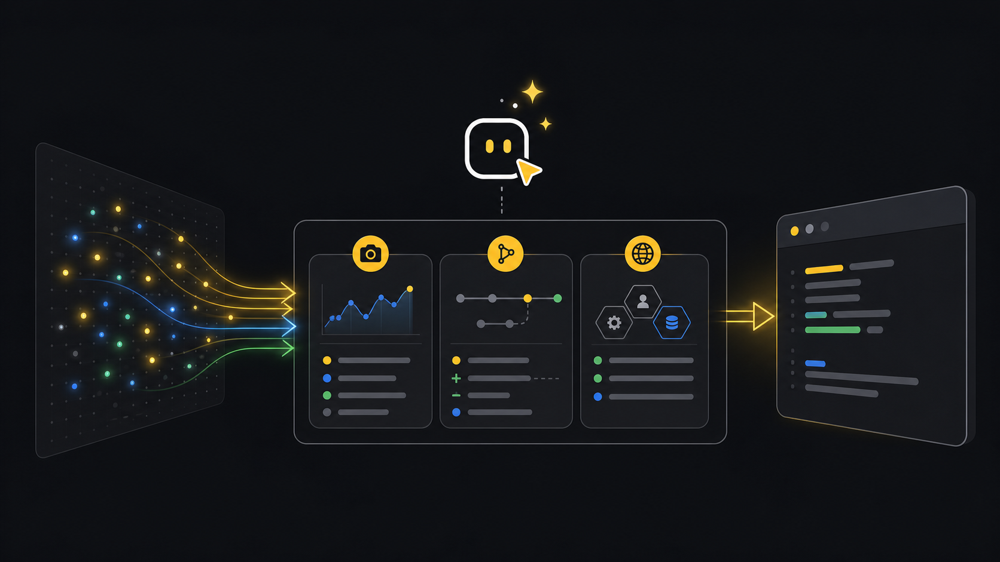

Incidents
Incident triage.
Use this when you need to know what is active now, whether incidents changed during a short window, and which fleet context should be included before escalation.
Ask an agent
Ask for the operational view you need. The workflow below shows how the agent turns that into CLI checks and files.
Show me what changed in active incidents.
Use the ready tenant, or ask which tenant if more than one is ready.
Start with the current active incident snapshot.
If incidents are active, add fleet context so I can see whether this is isolated or widespread.
Show the count, what changed, any files written, and the next useful move.Workflow
- StartSelect tenantUse the ready tenant that owns the incident queue.
- WatchRead incidentsCapture the active set and any changes in a short window.
- BranchCheck countStop if nothing is active; collect context if incidents exist.
- ContextInspect fleetCompare the incident with device and fleet state.
- NextChoose handoffContinue monitoring, write a report, or plan remediation.
Goal
The incident watch command gives a normalized incident frame. Run it once for a quick count, or poll briefly to detect additions, removals, and updates. Use fleet and deep-dive outputs when the incident needs context.
Commands
-
Get the current active incident snapshot
This is the fastest way to answer "what is active right now?"
xyte-cli ops watch incidents \ --tenant <tenant-id> \ --profile incidents-active \ --once \ --strict-json -
Watch a short change window
Use a bounded watch for live triage. The output file is NDJSON so every frame can be read independently.
xyte-cli ops watch incidents \ --tenant <tenant-id> \ --profile incidents-active \ --interval-ms 2000 \ --max-polls 30 \ --strict-json \ --out ./artifacts/xyte-watch.incidents.ndjson -
Add fleet context before deciding what to do
These files answer whether the incident is isolated or part of a broader tenant problem.
xyte-cli ops inspect fleet \ --tenant <tenant-id> \ --render json \ --out ./artifacts/xyte-fleet.triage.json xyte-cli ops inspect deep-dive \ --tenant <tenant-id> \ --window 24 \ --render json \ --out ./artifacts/xyte-deep-dive.triage.json
Read the output
snapshotis the baseline incident set.deltameans an incident was added, removed, or updated since the previous successful frame.heartbeatmeans polling worked and nothing changed.errormeans the poll failed; keep the previous good baseline and retry after checking setup.
{
"event": "snapshot",
"tenantId": "<tenant-id>",
"summary": {
"active": 12,
"critical": 1,
"high": 2
}
}You are done when you can name the active count, identify new or changed incidents, and point to the fleet context file that explains whether the issue is isolated.
If it fails
Compare filters first: status, date range, page size, and whether the UI hides older active incidents.
Run xyte-cli config doctor --tenant <tenant-id> --format text, then retry with --once.
Use --max-polls. Do not leave an unbounded watch running in a support handoff.